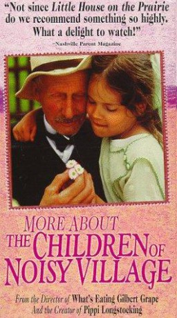

#9343 Neues von uns Kindern aus Bullerbü
Alternativ: More About the Children of Noisy Village (Englischer Titel)
 
 IMDB-Wertung: 6.7 / 10
IMDB-Wertung: 6.7 / 10  Metascore: 0
Metascore: 0 
Eine schreckliche Zeit für Lisa, Inga, Britta, Ole und Bosse, denn bis Weihnachten ist es noch eine furchtbare lange Zeit und erst dann gibt es wieder Ferien. Doch schneller als gedacht ist die Weihnachtszeit da, es werden Plätzchen gebacken, Geschenke werden gebastelt und schön verpackt. Am Weihnachtstag stehen alle Kinder mit leuchtenden Augen vor dem festlich strahlenden Baum und feiern zusammen mit den Eltern ein wunderschönes Fest. Doch die Idylle hat bald ein Ende. Beim Eislaufen bricht Bosse durchs dünne Eis. Nur der wagemutige Einsatz seiner Freunde rettet ihm das Leben.
Jahr: 1987
Dauer: 85 Minuten
FSK: 0
Land: Schweden Studio: Jugendfilm-VerleihTonspuren:
Untertitel:
Auflösung: 720p (1280x720) Größe: 2283 MB
Genre: Familie
Regisseur: Lasse Hallström
Drehbuch: Astrid Lindgren, Astrid Lindgren
Soundtrack: Georg Riedel
Darsteller:
- Henrik Larsson als
- Elisabeth Nordkvist als
- Catti Edfeldt als
- Linda Bergström als
- Crispin Dickson Wendenius als
- Ellen Demérus als
- Anna Sahlin als
- Harald Lönnbro als
- Tove Edfeldt als
- Ingwar Svensson als
- Bill Jönsson als
- Ann-Sofie Knape als
- Sören Petersson als
- Sigfrid Eriksson als
- Louise Ræder als
- Peter Dywik als
- Olof Sjögren als
- Ewa Carlsson als
- Britta Sterneland als
- Bernhard Andersson als
- Nina Englund als
Datei: X:\Kinder Collections\Astrid Lindgren\Neues von uns Kindern aus Bullerbü (1987, FSK0, 1280x720).mkv seit 30.07.2018
Festplatte: Kinder-Filme+Trick
 Es gibt insgesamt 26 Filme in der Gruppe 'Kinder Collections\Astrid Lindgren'
Es gibt insgesamt 26 Filme in der Gruppe 'Kinder Collections\Astrid Lindgren'